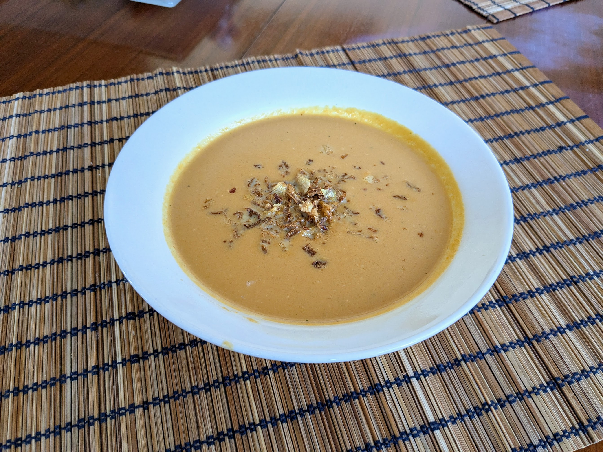

Soupe de carottes caramélisées

Ici parsemé d'oignons frits
Pour 4 personnes :
- Un bon kilo de carottes
- 220g de beurre (oui)
- 1L de bouillon de légumes ou de poulet (pas trop concentré)
- 100mL de crème
- Une cuillère à café de bicarbonate de soude
- Une cuillère à café de sel fin
- Éplucher les carottes (il faut qu'il en reste 1kg une fois pelées) et enlever les extrémités. Les couper en 4 dans le sens de la longueur, puis enlever le gros du cœur au couteau (si il en reste un peu, c'est pas grave, si les carottes sont nouvelles, pas besoin) et les couper en tronçons longs comme un petit doigt.
- Faire fondre le beurre dans une cocotte-minute à feu moyen-fort. Dissoudre le sel et le bicarbonate dans 60mL d'eau, et ajouter le mélange dans la cocotte avec les carottes. Bien remuer et fermer la cocotte.
- Lorsque la soupape commence à siffler, baisser le feu, et laisser cuire 20 minutes. Pendant ce temps, faire chauffer le bouillon et la crème doucement, en évitant de faire bouillir.
- Éteindre le feu, laisser la pression retomber, ouvrir le couvercle, et mixer le contenu de la cocotte.
- Ajouter le bouillon et la crème, mélanger, servir chaud.
Remarque : on peut faire la même recette avec un autre légume, par exemple du potiron ou du chou-fleur. Dans tous les cas on reconnaît le goût du légume original, mais le côté caramélisé ajoute une dimension unique et chouette.